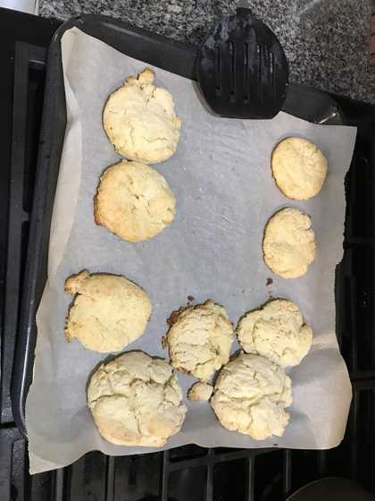

笠間稲荷神社のそば / 焼き菓子とテイクアウト
ひとつから、
日々のおやつを。
車庫を改装した小さな店の、小さなお菓子。1個から気軽にどうぞ。

笠間稲荷神社のそば / 焼き菓子とテイクアウト
車庫を改装した小さな店の、小さなお菓子。1個から気軽にどうぞ。


笠間市笠間、笠間稲荷神社の近くにある、テイクアウト中心の小さな焼き菓子店です。2023年1月27日にオープンしました。
もとは車庫だった建物を改装したお店。店主さんは「日常的に味わえるお菓子を、1個からどうぞ」と話しています(地域紙の取材記事より)。
店名の意味など、公開情報で確認できなかったことは載せていません。


紹介記事などで、次のようなお菓子が紹介されています。日によって並ぶものは変わります。

塩サブレ、アメリカンチョコクッキーなど。

旬のフルーツを使ったシフォンサンドも(季節限定)。

日によってチーズケーキやプリンタルトなどが登場。

ひとつずつ選べる小さな焼き菓子。
営業時間・定休日・価格・ご予約・駐車場の詳細: 準備中(最新情報はInstagramでご確認ください)。写真は種類のイメージです。


以下はイメージ例です(創作であり、実在のお客様の声ではありません)。
イメージ例ひとつから買えるので、散歩の途中に気軽に寄れます。
イメージ例小さな店構えがかわいくて、ついお土産にも選びたくなります。
イメージ例どれも優しい味で、毎日のおやつにちょうどいいです。
〒309-1611 茨城県笠間市笠間１２００
電話: 準備中 / 営業時間・定休日: 準備中
写真はフリー素材のイメージで、店舗の実際の様子・商品ではありません。